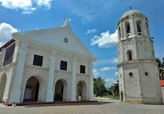
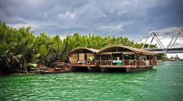
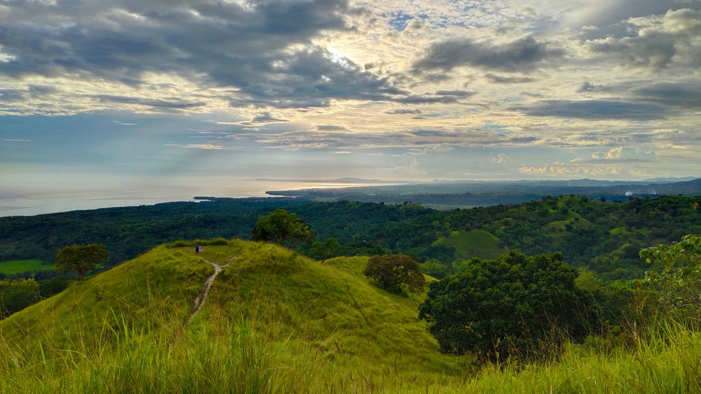
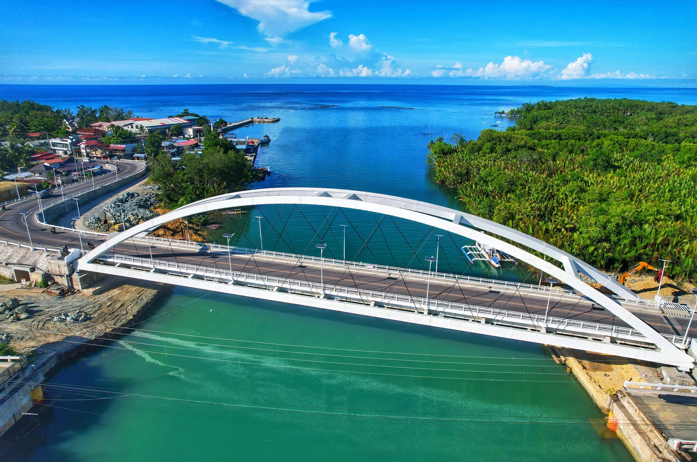
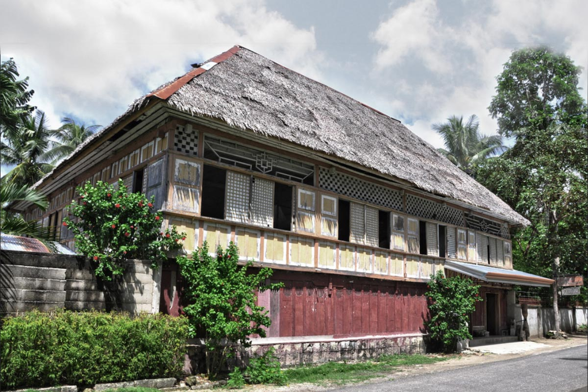
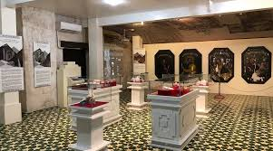
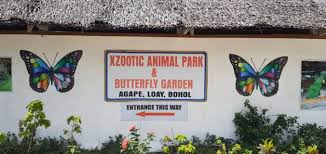
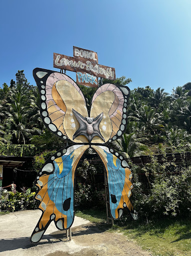

Tourist Destinations
Loay is known for its beautiful tourist destinations.
Here are some of the tourist destinations that you can visit:
Loay Church
Loay Church is a historical church that was built in the 1800s.
It is known for its beautiful architecture and rich history.
Rio Verde Floating Restaurant

Rio Verde Floating Restaurant offers a unique dining experience.
Enjoy delicious food while cruising along the river.
Morning Hills

Morning Hills is a serene destination perfect for relaxation.
It offers breathtaking views of the surrounding landscapes.
Loay Bridge

Loay Bridge is a historical landmark that connects the town.
It offers scenic views of the river and surrounding areas.
Loay Public Market

Loay Public Market is a bustling hub for local goods.
Experience the vibrant culture and fresh produce of Loay.
Clarin Ancestral House

The Clarin Ancestral House is a historical treasure.
It showcases the rich heritage of Loay's past.
Loay Museum

Loay Museum is a cultural gem.
Discover artifacts and stories from Loay's history.
Xzootic Park

Xzootic Park is a family-friendly destination.
Explore exotic animals and enjoy nature's beauty.
Bohol Lemur and Butterfly

Bohol Lemur and Butterfly Sanctuary is a must-visit.
Witness the beauty of nature and its creatures.